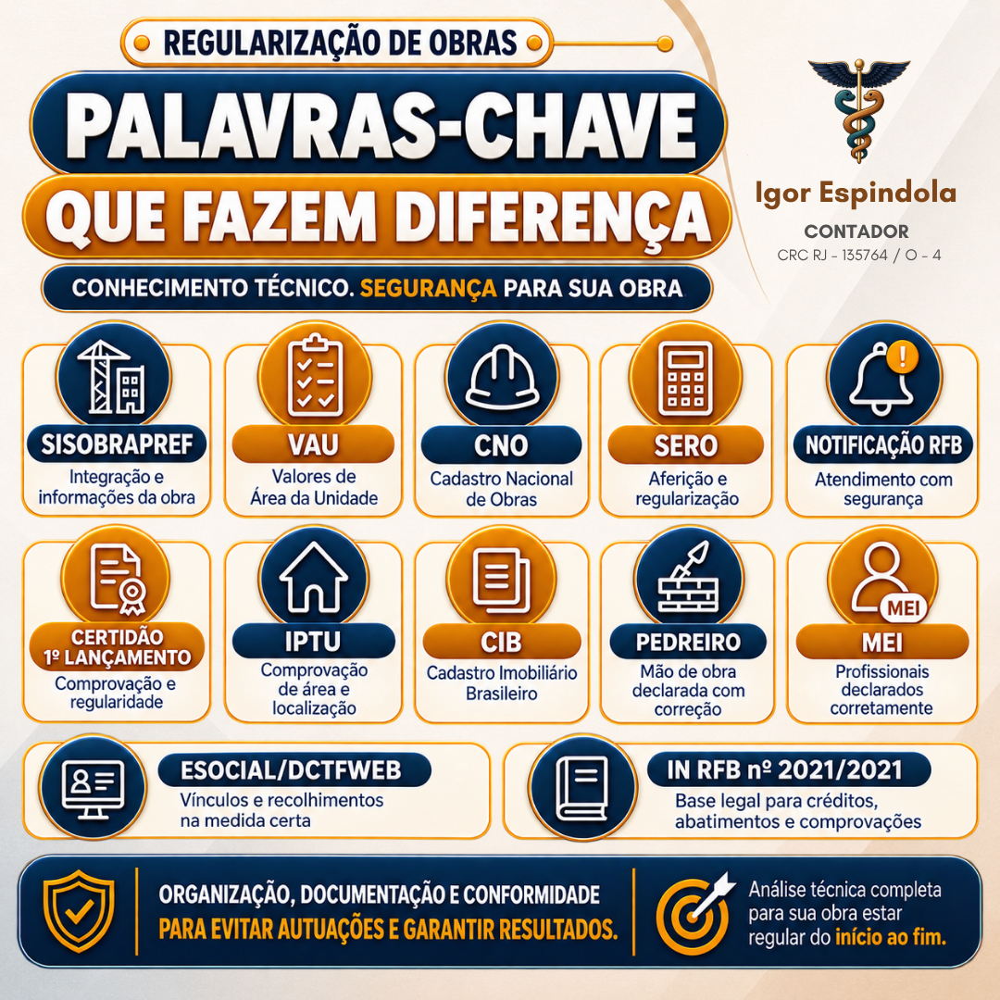
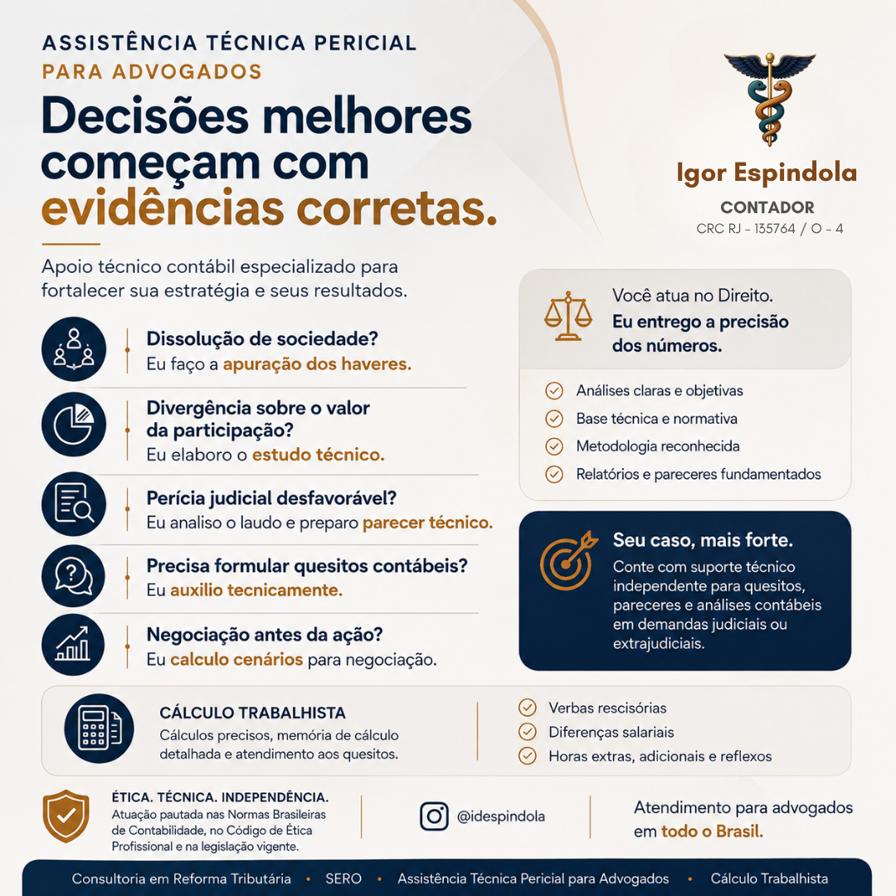

Serviços
Serviços
Soluções técnicas em tributação, perícia e regularização
Atendimento para empresas, advogados, contadores e pessoas físicas que precisam de análise clara, documentação bem organizada e decisões baseadas em evidências. Pela IDESPINDOLA SISTEMAS, uno contabilidade, tributação, tecnologia e orientação objetiva.
Parcerias técnicas
Atuação ao lado de profissionais que precisam entregar segurança documental, cálculos bem fundamentados e leitura técnica independente.
CNO/SERO para engenheiros e proprietários
Você cuida da engenharia. Eu cuido da regularização previdenciária da obra, com organização documental, conferência de informações e acompanhamento técnico do início ao fim.
Documentação faz diferença
Notas fiscais, recibos, comprovantes, contratos, recolhimentos e informações da obra precisam conversar entre si. A parceria técnica reduz risco de autuações e dá previsibilidade ao processo.
Segurança na regularização
Organização, documentação e conformidade para evitar autuações e sustentar a regularidade da obra perante a Receita Federal.

Assistência técnica pericial para advogados
Você atua no Direito. Eu entrego a precisão dos números. A parceria técnica dá suporte independente para quesitos, pareceres e análises contábeis em demandas judiciais ou extrajudiciais.
- Apuração de haveres em dissolução de sociedade.
- Estudo técnico sobre divergência de valores ou participação societária.
- Análise de laudo pericial desfavorável e preparação de parecer técnico.
- Formulação de quesitos contábeis.
- Cálculo de cenários para negociação antes da ação.
- Cálculo trabalhista com memória detalhada e atendimento aos quesitos.

Frentes principais
Serviços pensados para resolver problemas fiscais, patrimoniais e contábeis com método, documentação e linguagem direta.
Reforma tributária
Consultoria para entender impactos, reorganizar rotinas, revisar enquadramentos e preparar empresas para mudanças nas regras de consumo, documentos fiscais e apuração.
CNO e SERO
Regularização de obras junto à Receita Federal, com cadastro no CNO, aferição no SERO, análise documental e estudo de decadência tributária quando cabível.
Compliance e autorregularização
Apoio à organização de dados, preparação de notificações, cruzamentos fiscais e acompanhamento de ações de conformidade e autorregularização.
Contabilidade e negócios
Abertura de empresa
Análise do melhor caminho para formalizar o negócio, escolha do regime tributário, viabilidade, CNPJ, inscrições necessárias e alvará.
Contabilidade mensal
Escrituração, apuração de tributos, obrigações acessórias, demonstrações contábeis, relatórios e acompanhamento fiscal para empresas do Simples Nacional.
Gestão financeira
Organização de notas, conciliação bancária, fluxo de caixa, separação entre finanças pessoais e empresariais e leitura dos números para decisão.
Regularização e proteção
MEI, autônomos e pessoa física
Regularização, parcelamentos, credenciamento para emissão de notas, Carnê-Leão, Livro-Caixa, IRPF, ganho de capital e análise de pendências.
NFS-e, sistemas e automação
Apoio em rotinas de NFS-e Nacional, TRANSFARQ do Simples Nacional, ADN, CNC, Emissor Nacional, DTE-SN, conferência de dados, integrações, cruzamentos fiscais e automações com Python para tarefas contábeis e tributárias.
Marca, software e inovação
Orientação para proteger marcas, programas de computador e ativos intelectuais, com organização documental e acompanhamento do caminho adequado.
Regularização patrimonial
Leitura técnica de documentos, valores, imóveis, obrigações e registros para apoiar decisões administrativas, contábeis ou judiciais.